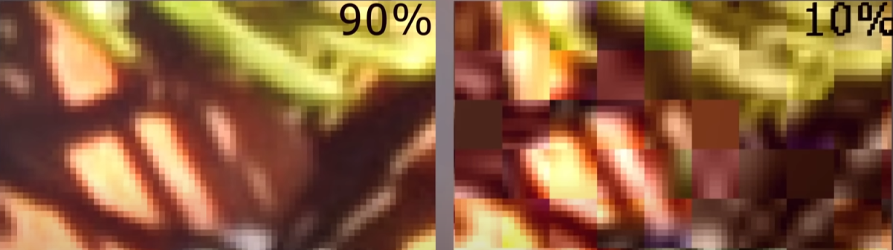
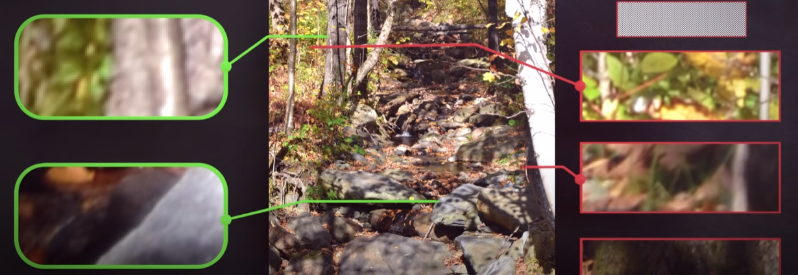
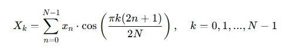
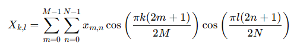
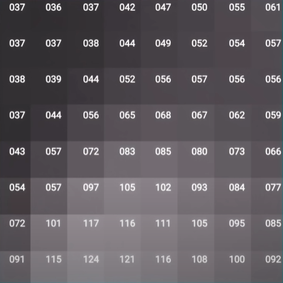
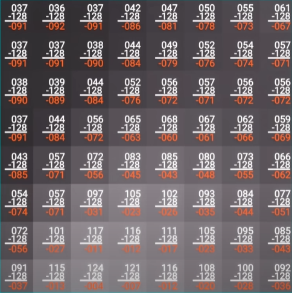
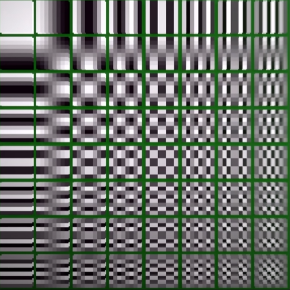
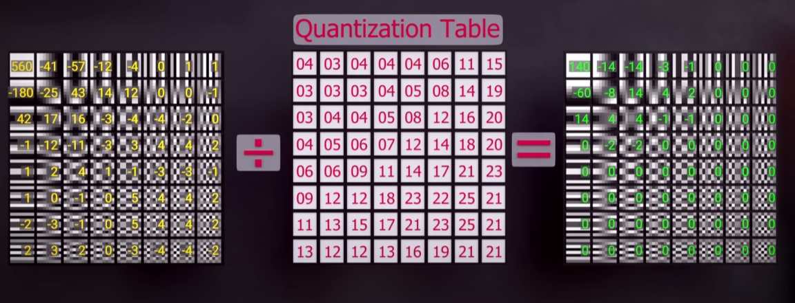
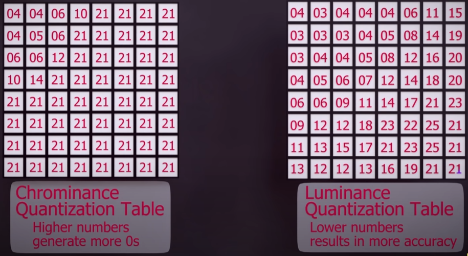

Alt: Controlador de áudio com as informações da página inicial
Introdução
A compressão de imagens é essencial para o armazenamento e transmissão eficiente de dados visuais, reduzindo a quantidade de informação necessária para representar uma imagem e mantendo a qualidade visual o mais alta possível. A DCT é uma técnica amplamente utilizada, especialmente em formatos de compressão como JPEG, além de MJPEG, MPEG, DV, Daala e compressão de vídeo Theora.
Esse seminário tem como objetivo apresentar o conceito, aplicação e características da DCT, explorando como ela atua na compactação de dados visuais e melhora a eficiência de transmissão.
Codificação por Transformadas
Ela é uma técnica de compressão de dados em que o sinal é convertido do domínio espacial (onde ele é visualizado originalmente) para o domínio de frequência (no caso da dct), ou seja, busca representar o sinal em uma forma que torne sua estrutura mais compressível.
Vantagens:
Redução da Redundância: Reduz redundâncias ao agrupar informação em coeficientes de baixa frequência, facilitando a quantização e compressão.
Compressão com Perdas e Alta Eficiência: Por meio da transformação e quantização dos coeficientes (ou seja, das componentes de frequência), a codificação por transformadas permite comprimir dados de forma eficiente, resultando em tamanhos de arquivo menores. A perda de qualidade que ocorre é, geralmente, quase imperceptível, pois é aplicada em frequências menos perceptíveis ao olho humano.
Isolamento de Componentes Essenciais: A transformação para o domínio de frequência permite que componentes de baixa e alta frequência sejam tratados de forma diferenciada. Componentes de baixa frequência, que geralmente carregam as informações essenciais do sinal, podem ser preservados, enquanto os de alta frequência podem ser descartados ou comprimidos com maior intensidade.
Reversibilidade e Manipulação Facilitada: A transformação para o domínio de frequência é geralmente reversível, o que significa que a imagem ou o sinal original pode ser reconstruído a partir dos coeficientes transformados (mesmo que alguns coeficientes tenham sido descartados ou reduzidos). Isso é fundamental para métodos de compressão que exigem boa reconstrução do sinal.
A Transformada Discreta de Cosseno (DCT)

Alt: Imagem de um bloco 8x8 da imagem original e o mesmo bloco reconstruído pela DCT
A DCT é uma transformação matemática que decompõe uma imagem em uma soma de componentes de frequência, convertendo dados do domínio espacial para o domínio da frequência para identificar partes da imagem que podem ser comprimidas.
Para aplicar a DCT, a imagem é dividida em blocos de 8X8 pixels (caso JPEG) e em cada bloco a DCT converte os valores dos pixels em coeficientes de frequência, assim sendo possível identificar os coeficientes de alta frequência, que contém detalhes mais finos e podem ser descartados para reduzir o tamanho do arquivo sem perda de qualidade relevante.
Prós e Contras:
Prós: Eficiência em compressão com perdas, boa representação para dados com predominância de baixa frequência.
Contras: Pode introduzir artefatos em imagens altamente comprimidas e depende da quantização dos coeficientes. Dividir a imagem em blocos menores pode gerar artefatos de blocagem em compressões mais altas, um efeito visual conhecido como "blockiness".
Alt: Imagem com 90% e 10% de compressão para demonstrar o efeito de artefato
Por que usar a DCT:
Eficiência Energética e Compactação de Informação;
Ortogonalidade e Separação das Frequências;
Proximidade com a Transformada de Karhunen-Loève (KLT);
Minimização de Artefatos e Maior Adaptabilidade Visual;
Separabilidade e Facilidade Computacional.
Funções Base da DCT e Padrões
A DCT possui funções base em formato de cosseno, que representam diferentes frequências.
Distribuição de Frequências:
Baixa Frequência: Representa características gerais e mais perceptíveis da imagem.
Alta Frequência: Detalhes finos e texturas, menos perceptíveis após quantização.
Alt: Imagem com elementos de baixa frequência (esquerda) e de alta frequência (direita)
Ortogonalidade
A DCT é uma transformada ortogonal, garantindo que seus vetores de base sejam independentes, o que permite uma transformação eficiente e inversível.
A ortogonalidade permite uma separação clara entre as informações de alta e baixa frequência, simplificando a compressão e a reconstrução da imagem.
Em contraste com métodos não ortogonais, a DCT preserva mais informações importantes na imagem comprimida, sendo ideal para compressão com perdas.
DCT 1D e 2D
DCT 1D: Utilizada principalmente em sinais de áudio e em processos preliminares de imagens.
DCT 2D: Fundamental em compressão de imagens, como o JPEG, pois trabalha em blocos bidimensionais.
A DCT 2D pode ser computada aplicando a DCT 1D em linhas e colunas separadamente, facilitando a computação.
Etapas da DCT
Divisão da imagem em blocos (geralmente 8x8)
Cada pixel possui um valor entre 0 e 256.
Alt: Imagem com elementos de baixa frequência (esquerda) e de alta frequência (direita)
Subtração do valor de cada pixel por 128
O range se tornará algo entre -128 e 127, onde o primeiro é o preto e o segundo, o branco.
Alt: Imagem com elementos de baixa frequência (esquerda) e de alta frequência (direita)
Utilização da imagem padrão
Qualquer imagem pode ser formada utilizando a combinação dessas 64 imagens base. Os 64 pixels da imagem original são transformados em 64 valores que representam o quanto de cada imagem base foi utilizada.
Alt: Imagem com as 64 imangens padrão
Quantização dos Coeficientes
A quantização é um processo de simplificação dos coeficientes, que são arredondados para valores próximos, resultando em compressão com perdas. A quantização dos coeficientes pode causar a perda de detalhes finos, especialmente em coeficientes de alta frequência, levando a um visual "suavizado".
A quantização anda lado a lado com a DCT em processos de compressão de imagens.
Maior quantização significa menor qualidade visual, mas maior compressão.
Os coeficientes de baixa frequência geralmente concentram a maior parte da energia do sinal de imagem.
Maior parte dos coeficientes de alta frequência são próximos de zero, o que facilita a compressão ao serem ignorados ou altamente quantizados.
Alt: Etapas da quantização
Alt: Tabela de quantização para Jpegs
Conclusão
A DCT é muito útil na compressão de imagens devido à sua eficiência em representar dados visuais com menos coeficientes, especialmente em formatos de baixa frequência. Sua aplicação em padrões como JPEG demonstra o impacto da DCT em sistemas de compressão modernos. Porém, apesar de eficaz, a DCT apresenta limitações, como artefatos de blocagem em compressões altas, levando ao uso combinado com outros métodos, como técnicas de pós-processamento para melhorar a qualidade da imagem final.
Referências
- https://sites.icmc.usp.br/frasson/jpeg/jpeg.html
- https://pt.wikipedia.org/wiki/Transformada_discreta_de_cosseno
- http://www2.ic.uff.br/~aconci/CosenosTransformada.pdf
- http://multimedia.ufp.pt/codecs/compressao-com-perdas/metodos-baseados-em-transformadas/transformada-discreta-do-coseno-dct/
- https://www.youtube.com/watch?v=Kv1Hiv3ox8I